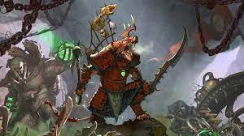

The High Elves, or the Asur, as they call themselves,are one of the most ancient and powerful mortal civilisations within the Warhammer World.Hailing from a mighty mist-shrouded island-continent located within the centre of the Great Ocean,[1e] the High Elves of Ulthuan are a proud and mighty nation of masterful warriors, peerless mages and lords of the sky and sea. They are an ancient race with powerful armies and even grander magic, building a grand and all-mighty civilisation who, alongside the Dwarfs, fought a long-forgotten, apocalyptic war which saw some of the greatest and most powerful mortal heroes battle against the great darkness that tried to consume the world many thousands of years ago. At the zenith of their power, the world was truly theirs for the taking.Yet their noble and compassionate nature, which was once one of the Elves greatest and most noble character was soon replaced by a great sense of pride and hubris in their own vanity and superiority. In their blind arrogance, they've only succeeded in shattering their once powerful friendship with the Dwarfs, culminating in a Great War which only crippled these two elder races and shattered whatever bright future there was for this young world. Isolated and alone in a world they no longer control, the High Elves are facing the twilight years of their existence, their cities no longer bustling with vibrancy and life as they used to be but now serve as a gloomy reminder of their ultimate, impending demise.The time of the High Elves has passed, or so it is said, yet such is their immense pride that they fight on nonetheless, for they consider themselves the true and rightful protectors of this ancient world, and they believe that so long as their civilisation persist throughout the ages, this dying world will never fall into complete darkness. If oblivion is indeed to be their fate, they have chosen to face it with arrow nocked and sword held high, defending the world they have loved and protected for so long. So do the white-garbed hosts of Ulthuan march to war, banners streaming in the wind and every warrior reconciled to death in service of a greater cause; the protection of this very world. Let the servants of destruction beware their righteous wrath.
DARK ELVES:
The Dark Elves, or the Druchii as they call themselves in their own tongue, also known as the Naggarothi or the "Dark Ones",are one of the most ancient, powerful, and certainly the most sadistic of the three Elven civilisations of the world.In the bleak, chilly lands of the continent of Naggaroth in the New World lies the Dark Elven kingdoms of the Witch King Malekith, a realm born from the depths of malice and hate, a kingdom that seeks nothing more than to despoil a world its people believe loathes their existence.With malevolent eyes, the Dark Elves watch this dying world, knowing it is their birthright to rule all that they survey and those that live upon it are born to do nothing more than to grovel at their feet.The Druchii are raiders, slavers and heartless reavers of the first degree, their every whim being nothing more than to sow misery and pain to all that oppose them, for misery and pain is the very lifeblood of their existence. Thus do their Black Arks and Corsair Fleets ply the great waters of the world, raiding and enslaving all before them as a tribute to their own avaricious desires. Yet even should every other land bow to their rule, the Dark Elves know that they cannot claim their glorious inheritance whilst their hated brethren, the High Elves, endure.Until that day finally dawns when the Isles of Ulthuan are finally theirs, the Dark Elves will continue their bloody quest as they always have. Great raiding fleets, their sails black against the night sky, bring woe and destruction to all the shores of the world, bearing terror and death to distant realms, often for no better reason than because there is no one who can stand against them.With every year that passes, the power of Naggaroth ascends to greater heights, built upon the backs of slaves and fuelled by a constant stream of plunder from far-off lands. As the other elder races fade, the Dark Elves thrive, knowing that their hour has at last come. Stormclouds gather across the High Elf realms, and the Witch King's malevolent laughter echoes upon the wind. Naggaroth will rise, Ulthuan will fall, and a vengeance thousands of years in the making will finally see its bloody conclusion
SKAVEN:
underground empire known in their tongue simply as the Under-Empire, where at the very heart of Skavendom lies the horrific city of Skavenblight,the species capital city and the probable birthplace of the Skaven race.The Skaven as a whole are a cruel, treacherous and highly numerous species that have since spread their loathsome corruption to the farthest corners of the Warhammer World. From deep below the earth, these scavengers have built a vast Empire, whose military power and incomprehensible numbers has the potential to smother the kingdoms of the Old World in a seething tide of violence and anarchy. It is believed by all of Skaven-kind that the world is destined to be theirs, for they consider themselves the Supreme Master Race, undeniably superior in every way to all the other races of the World.This unwavering belief stems from the promises made by their horrifically malevolent deity, known by many legendary names, but his most well-known title is that of the Horned Rat. The Horned Rat is known as the Harbinger of Corruption and Disease, the embodiment of all things the Skaven are or ever will be, and whose worship over the Under-Empire is both supreme and absolute. Within the cruel hierarchy of the Under-Empire, the wishes and demands of the Horned Rat is issued and maintained by the ruthless tyranny of the Council of Thirteen, an organisation that consists of the twelve most powerful Warlords within the Under-Empire whilst the thirteenth seat is reserved for the Horned Rat himself. It is due only to the Council's harsh tyranny that the Under-Empire remains unified in some shape or form for centuries, for none could ever hope to overcome the legions of warriors the Council has under their iron-fisted rule.Out of all the mortal civilisations within the greater world, no single race, neither the ruthless barbarian tribes of the north nor the savage greenskins of the east can be compared in terms of instability to that of the Skaven Under-Empire. The Skaven race as a whole is extremely divided, often far more divided than perhaps any other race known in existence. Such disunion and ruthless lack of cooperation stems from the Skaven's insatiable need to survive, thrive, and reign tyrannically over his brethren. To a Skaven, there is no such thing as pity, remorse, compassion, or cooperation. There is simply survival, survival in a turbulent society that only spares those that possess the brute strength, extreme cunning, and the vicious instinct to outmanoeuvre and kill the opposition, no matter the cost or the body count of either friend or foe.Though no matter how divided their race may be, they are nonetheless unified in a single cause, and that cause is to conquer the surface world and bring about the Great Ascendancy, where it is said that the Horned Rat's children will swarm across the face of the earth and claim all of it as their own

LIZARDMEN
The Lizardmen, sometimes known as the Cold Ones or the Children of the Gods[1d], are an ancient, savage, intelligent race of cold-blooded, reptilian humanoids that were at one time the first and oldest civilisation of the Warhammer World. Long before the rise of Men, Elf or Dwarf, the empire of the Lizardmen ruled supreme.Alien, enigmatic, and without mercy, the Lizardmen were there when it all began and will be there when the world draws its last dying breath, never tiring nor relenting until order is finally restored to this uncaring, chaotic world. Such is what they were made to do, for they are the ancient servants of the Old Ones, the one true protectors of this very world.Once, in a long and forgotten age, the Lizardmen ruled over it all, dominating this ancient world during an age of primeval monsters. Although their realm is now partly in ruins and overgrown, they seek once more to rise up and reclaim that which they have lost many millennia ago. While the task at hand remains near impossible, the empire of the Lizardmen still fights on -- unleashing their cold-blooded savagery upon any who would stand in the way of their sacred mission.From the lush jungles they come, beneath totems of gold, the Lizardmen march to war, the ground trembling from the approach of their large and mighty reptilian armies. They go to battle for reasons indecipherable to others, an ancient plan known only to themselves. None can ever understand their motives nor their ceaseless drive, for none truly understand that they are the rightful inheritors of the world. It is their sacred, if inscrutable, duty to restore order across the planet. If this means the wholesale eradication of the lesser upstart races outside of the Great Plan, then the Lizardmen empire shall enact this world-spanning genocide once more